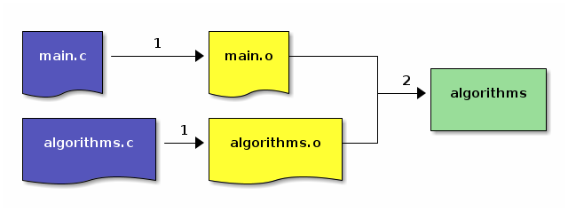

3. Compilarea unui program din fișiere multiple¶
În secțiunea anterioară, Compilarea unui fișier cod sursă C, am creat și am compilat un sigur fișier cod sursă C, is-prime.c.
În această secțiune vom compila un program pornind de la mai multe fișiere cod sursă și fișiere header. Mai exact, vom crea un program care afișează factorialul și inversul unui număr întreg.
3.1. Inspectarea fișierelor¶
Afișăm conținutul directorului support/compile-multiple, folosind comanda ls:
student@uso:~$ ls support/compile-multiple
algorithms.c algorithms.h main.c
main.c este fișier cod sursă și conține funcția main din care pornim logica programului.
algorithms.h este fișier header (cu extensia .h), conține declarația (antetul) funcției factorial: unsigned factorial(int n);.
algorithms.c este fișier cod sursă și conține definiția (implementarea) funcției factorial.
Exercițiu: Verificați conținutul fișierelor main.c, algorithms.c și algorithms.h folosind comanda cat, pagerul less sau editorul nano.
3.2. Compilarea programului din surse multiple¶
Ne plasăm în directorul support/compile-multiple folosind comanda cd:
student@uso:~$ cd support/compile-multiple
student@uso:~/support/compile-multiple$ ls
algorithms.c algorithms.h main.c
Compilăm fișierele algorithms.c și main.c într-un singur program numit algorithms folosind comanda gcc:
student@uso:~/support/compile-multiple$ gcc -o algorithms main.c algorithms.c
student@uso:~/support/compile-multiple$ ls
algorithms algorithms.c algorithms.h main.c
Acum GCC a compilat ambele fișiere cod sursă (main.c și algorithms.c), le-a legat, și a creat fișierul executabil algorithms.
Rulăm programul algorithms ca mai jos:
student@uso:~/support/compile-multiple$ ./algorithms
gimme number and i'll give you factorial: 12
12! = 479001600
Acum, de fiecare dată când modificăm fișierul main.c, compilatorul va trece iar prin etapa de compilare pentru ambele fișiere cod sursă, chiar dacă algorithms.c nu a fost și el modificat; la fel și vice-versa.
Acest lucru este ineficient atunci când lucrăm la un proiect mai mare, unde etapa de compilare durează mult 1.
În secțiunea următoare, Fișiere obiect, vedem cum scăpăm de această problemă.
Ștergem fișierul algorithms ca să avem directorul curat, folosind comanda rm.
student@uso:~/support/compile-multiple$ rm algorithms
student@uso:~/support/compile-multiple$ ls
algorithms.c algorithms.h main.c
Vom reface executabilul algorithms în secțiunea Fișiere obiect.
3.3. Fișiere obiect¶
Ca să evităm recompilarea fișierelor cod sursă care nu au fost modifcate, putem să descompunem etapa de compilare în 2 părți:
Compilarea tuturor fișierelor cod sursă (fișiere cu extensia .c) până la fișiere obiect (fișiere cu extensia .o)
Legarea fișierelor obiect într-un executabil.
Diagrama de mai jos descrie aceste două etape:
Note
Pașii 1 reprezintă pașii de compilare, iar pasul 2 este pas de legare.
Astfel, executabilul final depinde doar de fișierele obiect.
Fiecare fișier obiect depinde de fișierul cod sursă asociat (main.o de main.c și algorithms.o de algorithms.c).
Atunci când vom modifica fișierul main.c, vom regenera doar fișierul obiect main.o.
Nu este nevoie să regenerăm fișierul algorithms.o pentru că algorithms.c nu a fost modificat.
În subsecțiunile următoare vom compila fișierele sursă, main.c și algorithms.c, în fișiere obiect și le vom lega astfel încât, în final, vom obține executabilul algorithms.
3.3.1. Compilarea fișierelor cod sursă în fișiere obiect¶
În această subsecțiune vom trece prin pasul 1 din diagrama din secțiunea Fișiere obiect, adică pașii de compilare.
Compilăm fișierul main.c într-un fișier obiect main.o folosind opțiunea -c a comenzii gcc:
student@uso:~/support/compile-multiple$ gcc -c main.c
student@uso:~/support/compile-multiple$ ls
algorithms.c algorithms.h main.c main.o
Opțiunea -c compilează fișierul cod sursă main.c într-un fișier obiect main.o.
Facem același lucru pentru algorithms.c:
student@uso:~/support/compile-multiple$ gcc -c algorithms.c
student@uso:~/support/compile-multiple$ ls
algorithms.c algorithms.h algorithms.o main.c main.o
Acum avem 2 fișiere obiect, main.o și algorithms.o, pe care urmează să le legăm și să formăm executabilul algorithms.
3.3.2. Legarea fișierelor obiect într-un fișier executabil¶
În această subsecțiune vom trece prin pasul 2 din diagrama din secțiunea Fișiere obiect, adică pasul de legare.
Acum că avem 2 fișiere obiect, trebuie să le legăm pentru a obține executabilul final.
Legăm fișierele obiect main.o și algorithms.o folosind comanda gcc:
student@uso:~/support/compile-multiple$ gcc -o algorithms main.o algorithms.o
student@uso:~/support/compile-multiple$ ls
algorithms algorithms.c algorithms.h algorithms.o main.c main.o
Am creat executabilul final algorithms din 2 fișiere obiect.
Rulăm executabilul și vedem că are același comportament ca în secțiunea Compilarea programului din surse multiple:
student@uso:~/support/compile-multiple$ ./algorithms
gimme number and i'll give you factorial: 12
12! = 479001600
Ștergem fișierul algorithms folosind comanda rm:
student@uso:~/support/compile-multiple$ rm algorithms
student@uso:~/support/compile-multiple$ ls
algorithms.c algorithms.h algorithms.o main.c main.o
Plecând de la 2 fișiere obiect, main.o și algorithms.o, am obținut același executabil algorithms.
Știind cum compilăm individual 2 fișiere cod sursă, vedem în secțiunea următoare, Modificarea fișierelor sursă și recompilarea lor, beneficiile compilării incrementale. Recompilăm doar fișierele care au fost modificate de la ultima compilare și refacem executabilul prin legarea fișierelor obiect vechi (nemodificate de la ultima compilare) cu cele noi (recompilate după modificarea fișierelor cod sursă).
3.3.3. Modificarea fișierelor sursă și recompilarea lor¶
În continuare, vedem care sunt avantajele compilării incrementale, în care unele operații de compilare nu au loc.
Modificăm fișierul main.c, îl recompilăm într-un fișier obiect main.o.
Fișierul algorithms.o rămâne nemodificat.
Legăm noul fișier main.o cu vechiul fișier algorithms.o pentru a obține un nou executabil algorithms.
Adăugăm linia printf("%d! = %u\n", n + 1, factorial(n + 1)); în fișierul main.c, ca în imaginea de mai jos:
Compilăm fișierul main.c într-un fișier obiect main.o folosind gcc:
student@uso:~/support/compile-multiple$ gcc -c main.c
student@uso:~/support/compile-multiple$ ls
algorithms.c algorithms.h algorithms.o main.c main.o
Legăm fișierele obiect main.o și algorithms.o folosind comanda gcc:
student@uso:~/support/compile-multiple$ gcc -o algorithms main.o algorithms.o
student@uso:~/support/compile-multiple$ ls
algorithms algorithms.c algorithms.h algorithms.o main.c main.o
Am creat executabilul final algorithms din 2 fișiere obiect, fără să recompilăm fișierul algorithms.c (care nu a fost modificat).
Rulăm executabilul algorithms, ca mai jos:
student@uso:~/support/compile-multiple$ ./algorithms
gimme number and i'll give you factorial: 10
10! = 3628800
11! = 39916800
Am văzut în această secțiune cum compilăm eficient un program din mai multe fișiere cod sursă.
Concret, am compilat fișierele main.c și algorithms.c, independent unul față de celălalt, în fișierele obiect main.o și algorithms.o, le-am legat, și am creat executabilul algorithms.
3.4. Exerciții¶
Mergeți în directorul
~/support/compile-multiple-ex.Inspectați fișierele
main.cșilottery.c.Compilați fișierul cod sursă
main.cîn fișierul obiectmain.o.Compilați fișierul cod sursă
lottery.cîn fișierul obiectlottery.o.Legați fișierele obiect
main.oșilottery.oîn executabilullottery.Verificați că funcționează executabilul
lottery.
Note de subsol
- 1
Compilarea nucleului Linux durează, în general, mult. https://ubuntuforums.org/showthread.php?t=650461